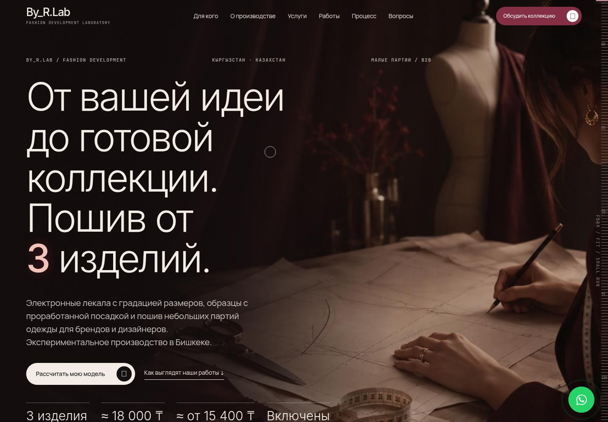
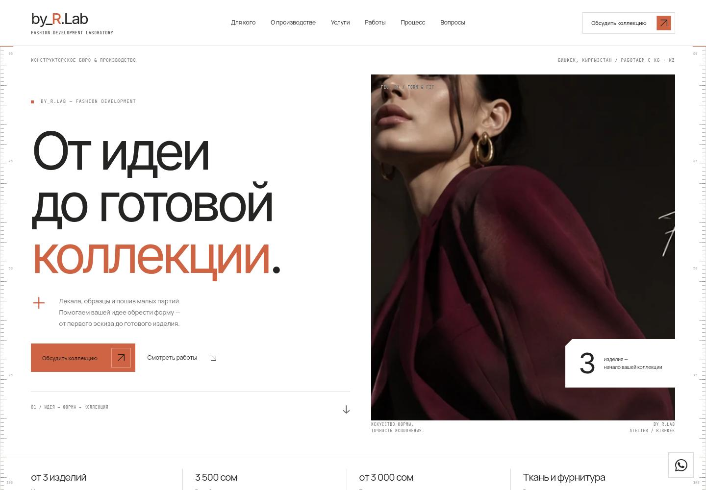
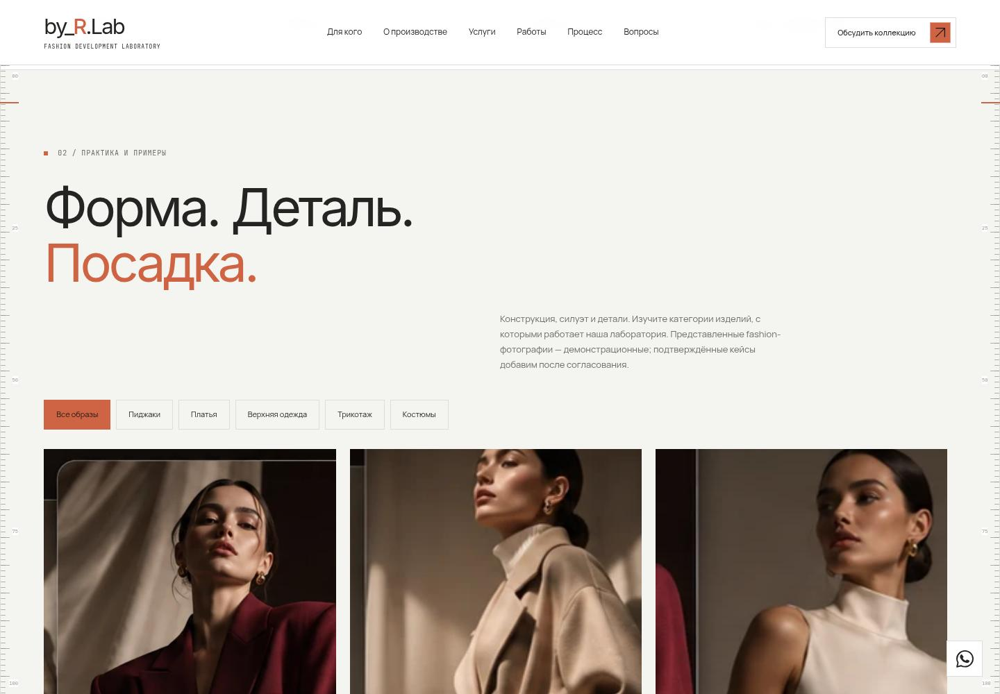
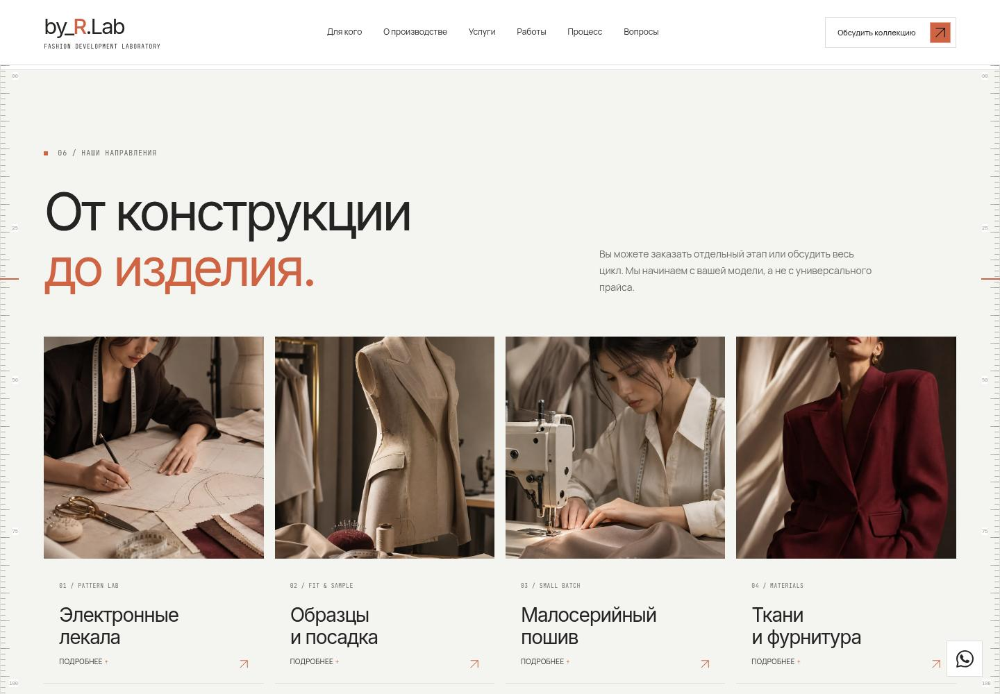
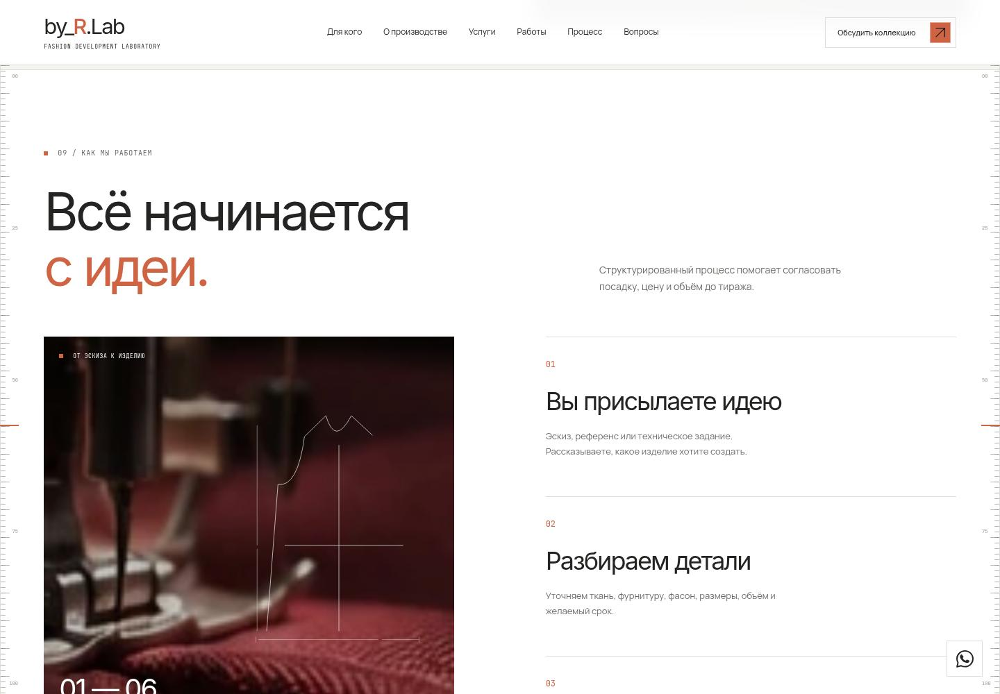
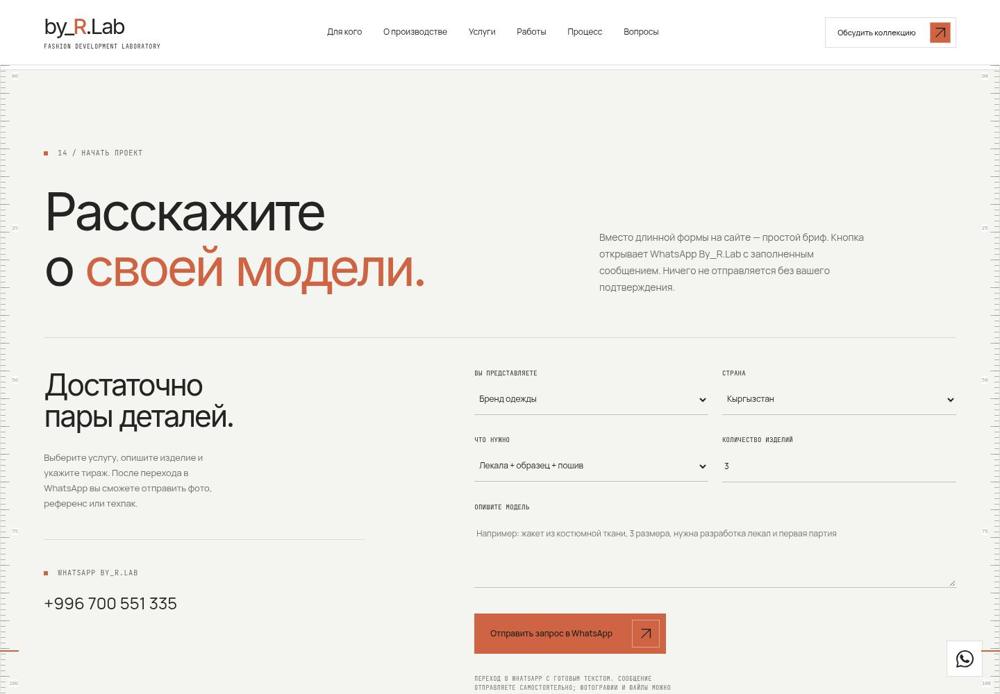
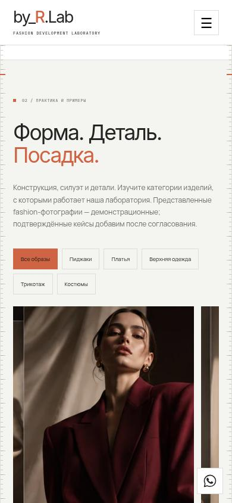
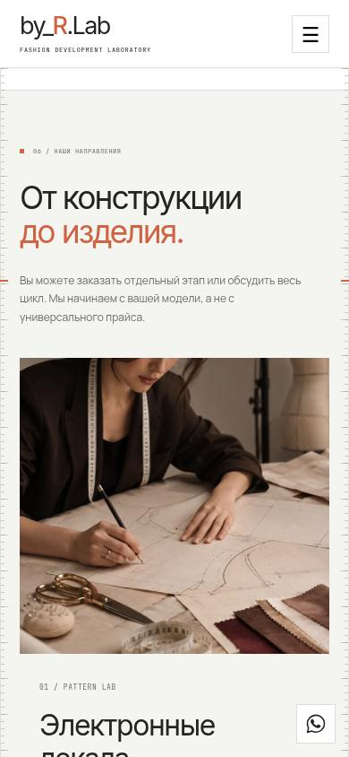
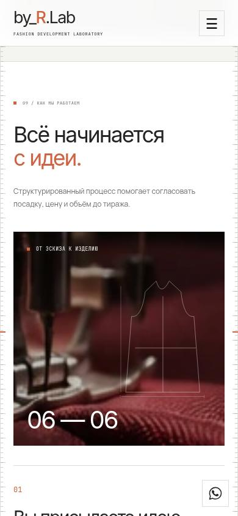
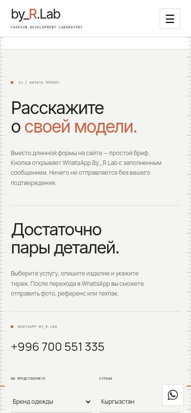

Редизайн существующих исходников By_R.Lab. Белая editorial-композиция, графитовая типографика, большие фотографии и сдержанный красно-оранжевый акцент. Production не изменён.
Новый отдельный проект: nurs11 / by-r-lab-editorial. Швейные линейки восстановлены с обеих сторон. Проверка линеек на семи ширинах.










Первый цвет измерен по прежнему файлу логотипа. Остальные — подобранные нейтрали интерфейса. Это ещё не точная палитра нового логотипа.
| Проверка | Результат |
|---|---|
| 360 / 390 / 430 / 768 / 1024 / 1440 / 1920 px | Нет горизонтального переполнения или выхода заголовков |
| Мобильное меню, FAQ, раскрытие услуги | Работают |
| Все категории и просмотр до последнего фото | Работают, изображения загружаются |
| WhatsApp / форма | 11 ссылок ведут на подтверждённый номер; текст формы формируется корректно |
| Reduced motion | Контент видим, активных анимаций 0, custom cursor скрыт |
| JavaScript / изображения | Ошибок выполнения и битых изображений не обнаружено |
| Production | SHA-1 главной страницы совпадает с исходным deployment |
Проверено в Chromium через Playwright. Сообщение в WhatsApp не отправлялось. Safari, физические устройства, Lighthouse и нагрузочное тестирование не проверялись. Существующие фотографии имеют демонстрационную маркировку, их разрешение сохранено.
GSAP, ScrollTrigger и Flip: появление строк hero, zoom-out фото, image mask reveal, фильтрация горизонтальной галереи, раскрытие услуг, sticky-презентация этапов, SVG-линии выкроек, мягкий parallax, magnetic CTA и курсор «Смотреть / Листать». На мобильных и при reduced motion эффекты упрощаются.